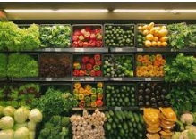

Explora las frutas de temporada de nuestro municipio, aprende cómo conservarlas y apoya a los productores locales.
| ID | Nombre | Temporada | Precio | Descripción | Productor |
|---|---|---|---|---|---|
| " . htmlspecialchars($fila['id_fruta']) . " | "; echo "" . htmlspecialchars($fila['nombre']) . " | "; echo "" . htmlspecialchars($fila['temporada']) . " | "; echo "$" . number_format($fila['precio'], 2) . " | "; echo "" . htmlspecialchars($fila['descripcion']) . " | "; echo "" . htmlspecialchars($fila['productor']) . " | "; echo "
| No hay frutas registradas. | |||||